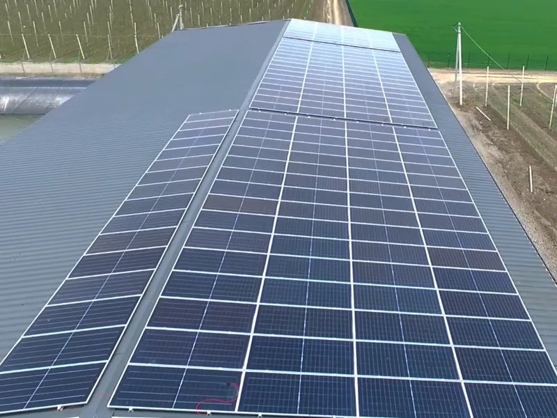

ГоловнаДля поливу
Енергія для поливу просто з поля
Сонячні станції для насосів і поливу у Вінницькій області, зокрема автономні, там, де немає мережі.
Скільки енергії потрібно насосам за сезон
Енергія насосів по місяцях сезону поливу без станції й зі станцією. Графік перерахується за вашими даними нижче.
За сезон насосам потрібно ≈ 43 900 кВт·год, усе з мережі або генератора.
| Місяць | Потрібно насосам | Закриває станція |
|---|
Приклад, ілюстративно: насоси 30 кВт, 8 год на день, сезон квітень — вересень, станція 50 кВт. Змініть дані в калькуляторі нижче.
Порахуйте для своїх насосів
Вкажіть насоси й сезон. Обидва графіки на сторінці перерахуються за вашими даними.
Рахуємо, що насоси працюють у світлий час. Нічний полив потребує акумулятора або накопичення води.
Станція закриває за сезон · приклад
≈ 93 %
Насосам потрібно ≈ 43 900 кВт·год за сезон. Щоб закрити й найслабший місяць (вересень), потрібно ≈ 70 кВт панелей.
Орієнтовно: 1 кВт панелей дає ≈ 1 150 кВт·год на рік, розподіл по місяцях типовий для Вінниччини, насоси працюють удень, без акумулятора й накопичення води. Похмурі дні знижують генерацію. Точний розрахунок інженер зробить за паспортами насосів і графіком поливу.
Надіслати ці дані інженеруПолив саду в Луці-Мелешківській
Станція 100 кВт для поливу саду, змонтована за 10 днів.

- Потужність
- 100 кВт
- Задача
- автономний полив саду
- Де
- Лука-Мелешківська, Вінницька обл.
- Рік
- 2025
- Монтаж
- 10 днів
Обстежили ділянку й затінення, розрахували потужність під пікові навантаження поливу, змонтували станцію й налаштували її разом із системою поливу.
Від насоса до власної енергії
- 01
Виїзд
Насоси, джерело води, ділянка, затінення.
- 02
Проєкт
Потужність під пікове навантаження поливу.
- 03
Постачання
Панелі, інвертори, конструкції.
- 04
Монтаж
10 днів для станції 100 кВт.
- 05
Запуск
Налаштування разом із системою поливу.
Питання агровиробників
Чи можна поливати там, де немає мережі?
Так. Станцію в Луці-Мелешківській ми будували саме для автономного поливу саду. Схему, потужність і обладнання підбираємо під ваші насоси та графік поливу.
Що буде в похмурий день або ввечері?
Генерація падає, тож у проєкті закладаємо запас: більшу потужність панелей, акумулятор, накопичення води в резервуарі або резервне живлення від мережі чи генератора. Варіант обираємо разом із вами після огляду.
Що робити зі станцією поза сезоном поливу?
Якщо об'єкт підключений до мережі, енергію можна використовувати на господарстві: склади, холодильні камери, майстерні. Умови віддачі надлишку в мережу залежать від чинних правил і договору з обленерго, це обговорюємо на консультації.
Скільки триває монтаж?
Станцію 100 кВт для поливу саду в Луці-Мелешківській ми змонтували за 10 днів. Точний термін назвемо після виїзду: він залежить від даху чи ділянки та наявності обладнання.
Дах чи земля?
Обидва варіанти. У Луці-Мелешківській панелі стоять на даху господарської будівлі поруч із садом. Якщо даху немає або він слабкий, ставимо наземну станцію.
Розрахунок для вашого поливу
Інженер передзвонить у робочий час, 09:00–18:00, і попросить дані насосів, щоб підібрати потужність станції.
Зручніше голосом?
+38 067 672 22 44 Написати у Viber